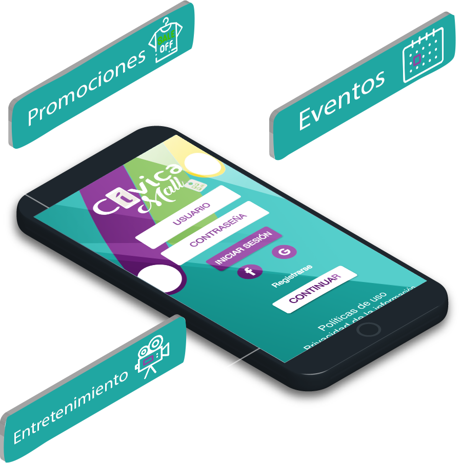

<div class="container-fluid objetivo">
  <div class="row">
      <div class="col-md-6 col-xs-12">
          <div class="card shadow-lg ">
            <h1>Dinámica</h1>

            <p>1. Promoción de la nueva app con la campaña "BeaconsTour".</p>
            <p>2. El comercio de la ciudad contará con la instalación de los beacons, los cuales a través de mensajes push enviarán a los usuarios monedas virtuales llamadas CiviLucas a su teléfono móvil. Esto, con el propósito de brindar una experiencia atractiva en el la ciudad de Medellín ganando premios especiales en medio de su recorrido, las cuales podrán canjear por obsequios.</p>
            <p>3. Promotores e impulsadores de marca siempre cerca de los usuarios entregando información acerca del uso de la herramienta.</p>

          </div>
      </div>
    <div class="col-md-6 col-xs-12">
      
    </div>
    </div>
  </div>

